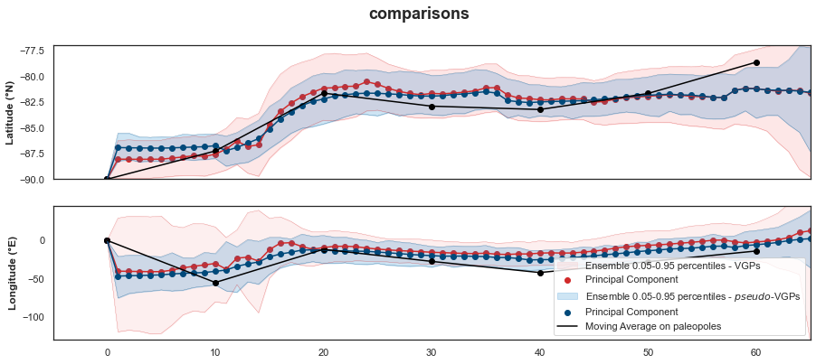
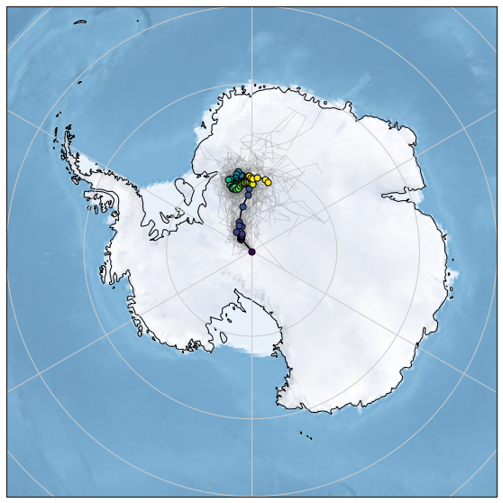
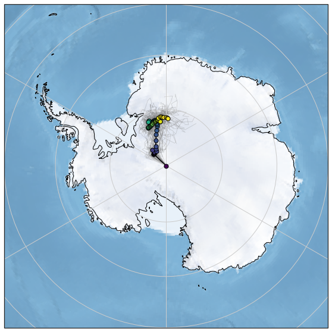
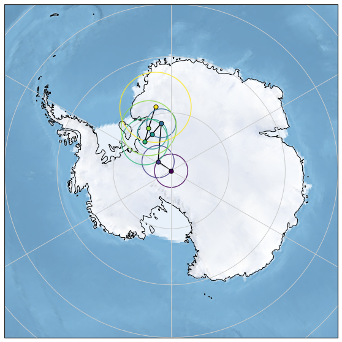

Compiles a DataFrame for both, the VGPs and the recomputed poles by study
Contents
import os
import numpy as np
import pandas as pd
import matplotlib.pyplot as plt
import seaborn as sns
import cartopy.crs as ccrs
sns.set_style("white")
from pmagpy import ipmag, pmag
from vgptools.auxiliar import (spherical2cartesian,GCD_cartesian)
from vgptools.utils_APWPs import (running_mean_APWP_shape, get_pseudo_vgps, MC_error_prop_ensemble_results)
from vgptools.utils_visualization import plot_pole, plot_pole_A95
from vgptools.utils_classes import PC, quantiles
np.random.seed(1)
Compiles a DataFrame for both, the VGPs and the recomputed poles by study#
current_path = os.getcwd()
data_path_VGP = current_path + '/data/vgp_database'
df_filtered_directions = pd.read_csv(current_path +'/data/df_vgps_filtered.csv')
df_pole_compilation = pd.read_csv(current_path +'/data/df_pole_compilation_by_study.csv')
# list to store the models
models = []
1. Moving average classic approach on poles#
Set the classical parameters
min_age = 0
max_age = 65
window_length = 20
time_step = 10
Run the Moving average on paleopoles
(Note: There may be multiple poles for each file, as multiple studies have been conducted in the same area. This is basically the content of each datasheet)
RM_1_classic = running_mean_APWP_shape(df_pole_compilation, "Plon", "Plat", "mean_age", window_length, time_step, max_age, min_age)
RM_1_classic['method'] = "RM_classic"
models.append(RM_1_classic)
RM_1_classic.head(10)
| age | N | n_studies | k | A95 | csd | plon | plat | foliation | lineation | collinearity | coplanarity | elong_dir | GCD | APW_rate | angle | method | |
|---|---|---|---|---|---|---|---|---|---|---|---|---|---|---|---|---|---|
| 0 | 0.0 | 17.0 | 15.0 | 155.075584 | 2.873466 | 6.504491 | 0.000000 | -90.000000 | 0.673561 | 4.819217 | 7.154834 | 5.492778 | 52.950148 | NaN | NaN | NaN | RM_classic |
| 1 | 10.0 | 18.0 | 15.0 | 154.995795 | 2.785329 | 6.506165 | -54.986373 | -87.258735 | 0.699943 | 4.806285 | 6.866678 | 5.506228 | 48.438290 | 0.375266 | 0.037527 | 163.155600 | RM_classic |
| 2 | 20.0 | 7.0 | 6.0 | 576.253052 | 2.516820 | 3.374259 | -11.644529 | -81.643535 | 2.379876 | 5.904994 | 2.481219 | 8.284869 | 28.613948 | 6.633272 | 0.663327 | 35.000034 | RM_classic |
| 3 | 30.0 | 10.0 | 7.0 | 352.037229 | 2.578271 | 4.317086 | -27.417630 | -82.908968 | 3.219457 | 5.313450 | 1.650418 | 8.532907 | 28.978465 | 2.457136 | 0.245714 | 174.787778 | RM_classic |
| 4 | 40.0 | 13.0 | 8.0 | 106.788061 | 4.029946 | 7.838332 | -42.018275 | -83.233935 | 1.211546 | 4.320118 | 3.565790 | 5.531664 | -94.770122 | 1.785938 | 0.178594 | 29.497476 | RM_classic |
| 5 | 50.0 | 12.0 | 9.0 | 83.449008 | 4.779163 | 8.866953 | -27.811855 | -81.677918 | 0.806618 | 4.186000 | 5.189566 | 4.992618 | -92.200769 | 2.417822 | 0.241782 | 178.060425 | RM_classic |
| 6 | 60.0 | 4.0 | 4.0 | 222.541387 | 6.172545 | 5.429747 | -13.837826 | -78.640250 | 1.695166 | 5.163581 | 3.046062 | 6.858747 | -34.503896 | 3.843211 | 0.384321 | NaN | RM_classic |
2. Running means ensemble from \(pseudo\)-VGPs approach (Vaes et al. 2022)#
min_age = 0
max_age = 65
window_length = 20
time_step = 1
%%time
np.random.seed(10) # seed for reproducibility
RM_2_ensemble_pseudoVGP = pd.DataFrame(columns=['run','n_studies','k','A95','csd'])
for i in range(100):
pseudo_vgps_temp = get_pseudo_vgps(df_pole_compilation) # function to generate pseudo-VGPs from pole's pdfs
RM_APWP_parametric_temp = pd.DataFrame()
RM_APWP_parametric_temp = running_mean_APWP_shape(pseudo_vgps_temp, 'Plon', 'Plat', 'mean_age', window_length, time_step, max_age, min_age)
RM_APWP_parametric_temp['run'] = i
RM_APWP_parametric_temp['plon'] = RM_APWP_parametric_temp['plon'].apply(lambda plon: plon - 360 if plon > 180 else plon)
RM_APWP_parametric_temp['method'] = "RM_pseudoVGPs_ensemble"
RM_2_ensemble_pseudoVGP = RM_2_ensemble_pseudoVGP.append(RM_APWP_parametric_temp, ignore_index=True)
models.append(RM_2_ensemble_pseudoVGP)
CPU times: user 1min 26s, sys: 341 ms, total: 1min 27s
Wall time: 1min 27s
3. Monte-Carlo uncertainty propagation scheme proposed in this study.#
We take the original directions as a PDF to generate to generate a pseudo-Dataset that incorporates the uncertinty in the directional space and time. We aaply the running means on a number of \(pseudo\)-VGPs to generate an ensemble of possible paths
min_age = 0
max_age = 65
window_length = 21
time_step = 1
%%time
np.random.seed(10) # seed for reproducibility
df_RM_ensemble = MC_error_prop_ensemble_results(df_filtered_directions, n_bst = 1000,
study_label= 'Study', slat_label='slat', slon_label='slon',
dec_label='dec_reverse', inc_label='inc_reverse', k_label='k',
mean_age_lab='mean_age', min_age_lab='min_age', max_age_lab='max_age',
plon_label = 'plon', plat_label='plat', age_label = 'age',
window_length=window_length, time_step=time_step, max_age=max_age, min_age=min_age)
CPU times: user 14min 47s, sys: 2.63 s, total: 14min 50s
Wall time: 14min 50s
Calcultes the Princ. Components of the ensemble#
We first select confidence interval at which we will work
quantile = 95
# Since the Latitude and Longitude covaries, we need to calculate the Principal component for each timre-dependant point Cloud
ensemble_PC_Vaes = PC(RM_2_ensemble_pseudoVGP,"age","plat","plon") # set principal component for each Age
ensemble_PC_Gallo = PC(df_RM_ensemble,"age","plat","plon") # set principal component for each Age
Comparison plot#
title = "comparisons"
fig, axes = plt.subplots(2, 1, sharex=True, figsize=(15,6))
fig.suptitle(title, fontsize= 18, fontweight ='bold')
# axes[0].set_title('Latitude (°N)', fontsize=12, fontweight ='bold')
# axes[1].set_title('Longitude (°E)', fontsize=12, fontweight ='bold')
axes[0].set_ylabel(r'Latitude (°N)', fontweight ='bold')
axes[1].set_ylabel(r'Longitude (°E)', fontweight ='bold')
axes[0].set_ylim(-90,-77)
axes[1].set_ylim(-130,45)
axes[0].set_xlim(-5,65)
axes[1].set_xlim(-5,65)
# LATITUDE
# Gallo
axes[0].fill_between(ensemble_PC_Gallo.X, ensemble_PC_Gallo.Lat_Lon_bounds(quantile)[2], ensemble_PC_Gallo.Lat_Lon_bounds(quantile)[3], color= "#f98787", alpha=.20)
axes[0].plot(ensemble_PC_Gallo.X, ensemble_PC_Gallo.Lat_Lon_bounds(quantile)[3],color="#d12a2a",linewidth=0.2)
axes[0].plot(ensemble_PC_Gallo.X, ensemble_PC_Gallo.Lat_Lon_bounds(quantile)[2],color="#d12a2a",linewidth=0.2)
axes[0].scatter(ensemble_PC_Gallo.X, ensemble_PC_Gallo.PC(quantile)[1],color="#d12a2a")
axes[0].plot(ensemble_PC_Gallo.X, ensemble_PC_Gallo.PC(quantile)[1],color="#d12a2a")
# Vaes
axes[0].fill_between(ensemble_PC_Vaes.X,ensemble_PC_Vaes.Lat_Lon_bounds(quantile)[2],ensemble_PC_Vaes.Lat_Lon_bounds(quantile)[3], color= "#0E7DC9", alpha=.20)
axes[0].plot(ensemble_PC_Vaes.X, ensemble_PC_Vaes.Lat_Lon_bounds(quantile)[3],color="#00497A",linewidth=0.2)
axes[0].plot(ensemble_PC_Vaes.X, ensemble_PC_Vaes.Lat_Lon_bounds(quantile)[2],color="#00497A",linewidth=0.2)
axes[0].scatter(ensemble_PC_Vaes.X, ensemble_PC_Vaes.PC(quantile)[1],color="#00497A")
axes[0].plot(ensemble_PC_Vaes.X, ensemble_PC_Vaes.PC(quantile)[1],color="#00497A")
#CLASSIC
axes[0].plot(RM_1_classic.age, RM_1_classic.plat, '-',color="black") #CLASSIC
axes[0].scatter(RM_1_classic.age, RM_1_classic.plat, color="black") #CLASSIC
# LONGITUDE
# Gallo
axes[1].fill_between(ensemble_PC_Gallo.X, ensemble_PC_Gallo.Lat_Lon_bounds(quantile)[0], ensemble_PC_Gallo.Lat_Lon_bounds(quantile)[1], color= "#f9afaf", alpha=.20,label=f"Ensemble {1-quantile/100:.2f}-{quantile/100:.2f} percentiles - VGPs")
axes[1].plot(ensemble_PC_Gallo.X, ensemble_PC_Gallo.Lat_Lon_bounds(quantile)[1],color="#d12a2a",linewidth=0.2)
axes[1].plot(ensemble_PC_Gallo.X, ensemble_PC_Gallo.Lat_Lon_bounds(quantile)[0],color="#d12a2a",linewidth=0.2)
axes[1].plot(ensemble_PC_Gallo.X, ensemble_PC_Gallo.PC(quantile)[0], '-',color="#d12a2a")
axes[1].scatter(ensemble_PC_Gallo.X, ensemble_PC_Gallo.PC(quantile)[0],color="#d12a2a",label="Principal Component")
# Vaes
axes[1].fill_between(ensemble_PC_Vaes.X, ensemble_PC_Vaes.Lat_Lon_bounds(quantile)[0], ensemble_PC_Vaes.Lat_Lon_bounds(quantile)[1], color= "#0E7DC9", alpha=.20,label=f"Ensemble {1-quantile/100:.2f}-{quantile/100:.2f} percentiles - $pseudo$-VGPs")
axes[1].plot(ensemble_PC_Vaes.X, ensemble_PC_Vaes.Lat_Lon_bounds(quantile)[1],color="#00497A",linewidth=0.2)
axes[1].plot(ensemble_PC_Vaes.X, ensemble_PC_Vaes.Lat_Lon_bounds(quantile)[0],color="#00497A",linewidth=0.2)
axes[1].plot(ensemble_PC_Vaes.X, ensemble_PC_Vaes.PC(quantile)[0], '-',color="#00497A")
axes[1].scatter(ensemble_PC_Vaes.X, ensemble_PC_Vaes.PC(quantile)[0],color="#00497A",label="Principal Component")
# Classic
axes[1].plot(RM_1_classic.age, RM_1_classic.plon, '-',color="black", label = "Moving Average on paleopoles") #CLASSIC
axes[1].scatter(RM_1_classic.age, RM_1_classic.plon, color="black") #CLASSIC
plt.legend(loc="lower right")
# plt.savefig(current_path + '/figures/6/6a.svg', dpi =600, bbox_inches='tight')

Misfit of the Classical approach vs. the psuedoVGP and our current approach#
for i, row in RM_1_classic.iterrows():
mean_cartesian = spherical2cartesian([np.radians(row.plat),np.radians(row.plon)])
ind = np.where(ensemble_PC_Gallo.X == row.age)
vgps_cart = spherical2cartesian([np.radians(ensemble_PC_Gallo.PC(quantile)[1][ind]), np.radians(ensemble_PC_Gallo.PC(quantile)[0][ind])])
pseudo_cart = spherical2cartesian([np.radians(ensemble_PC_Vaes.PC(quantile)[1][ind]), np.radians(ensemble_PC_Vaes.PC(quantile)[0][ind])])
RM_1_classic.loc[i, 'Distance_to_pseudo']=np.degrees(GCD_cartesian(mean_cartesian,pseudo_cart))
RM_1_classic.loc[i, 'Distance_to_VPGs']=np.degrees(GCD_cartesian(mean_cartesian,vgps_cart))
RM_1_classic_melt = RM_1_classic[['age','Distance_to_pseudo','Distance_to_VPGs']].melt('age', var_name='method', value_name='Angle')
sns.set_theme(style="darkgrid")
fig, ax = plt.subplots(figsize=(15,3))
ax.set_xlim(0,65)
sns.set_style("white")
sns.barplot(x="age", y="Angle", hue = 'method', data=RM_1_classic_melt,ax=ax)
# plt.savefig(current_path + '/figures/6/6b_gcds.svg', dpi =600, bbox_inches='tight')
<AxesSubplot:xlabel='age', ylabel='Angle'>
This Study#
# Visualization
extent = [-180,180,-60,-60]
fig = plt.figure(figsize=(20,10))
proj = ccrs.Orthographic(central_longitude=0.0, central_latitude=-90.0)
ax = plt.axes(projection=proj)
ax.coastlines(), ax.stock_img(), ax.gridlines()
ax.set_extent(extent, crs = ccrs.PlateCarree())
# A black path for the time-varying Principal Component.
plt.plot(ensemble_PC_Gallo.PC(quantile)[0].tolist(), ensemble_PC_Gallo.PC(quantile)[1].tolist(),transform = ccrs.Geodetic(), color = "black", alpha = 1, linewidth=1.5, zorder=1)
# Color coded Paleopoles and 95 circles.
# for i in zip(ensemble_PC.PC()[1].tolist(), ensemble_PC.PC()[0].tolist(),ensemble_PC.PC()[2].tolist(), df_RM_ensemble['age'].unique().transpose()):
# plot_pole_A95(i[0],i[1],i[2],i[3],0,60,ax)
for i in zip(ensemble_PC_Gallo.PC(quantile)[1].tolist(), ensemble_PC_Gallo.PC(quantile)[0].tolist(),ensemble_PC_Gallo.X.tolist(), df_RM_ensemble['age'].unique().transpose()):
plot_pole(i[0],i[1],i[2],0,60,ax)
# Runs in grey (just plotting 50 runs)
for run, df_run in df_RM_ensemble[df_RM_ensemble['run']<50].groupby('run'):
plt.plot(df_run.plon.tolist(), df_run.plat.tolist(),transform = ccrs.Geodetic(), color = "grey", alpha = 0.3, linewidth=0.8, zorder=0)
plt.savefig(current_path + '/figures/6/RM_VGPs.svg', dpi =600, bbox_inches='tight')
plt.show()

Vaes et al. (2022) Approach - Running mean on \(pseudo\)-VGPs#
# Visualization
extent = [-180,180,-60,-60]
fig = plt.figure(figsize=(20,10))
proj = ccrs.Orthographic(central_longitude=0.0, central_latitude=-90.0)
ax = plt.axes(projection=proj)
ax.coastlines(), ax.stock_img(), ax.gridlines()
ax.set_extent(extent, crs = ccrs.PlateCarree())
# A black path for the time-varying Principal Component.
plt.plot(ensemble_PC_Vaes.PC(quantile)[0].tolist(), ensemble_PC_Vaes.PC(quantile)[1].tolist(),transform = ccrs.Geodetic(), color = "black", alpha = 1, linewidth=1.5, zorder=1)
# Color coded Paleopoles and 95 circles.
# for i in zip(ensemble_PC.PC()[1].tolist(), ensemble_PC.PC()[0].tolist(),ensemble_PC.PC()[2].tolist(), df_RM_ensemble['age'].unique().transpose()):
# plot_pole_A95(i[0],i[1],i[2],i[3],0,60,ax)
for i in zip(ensemble_PC_Vaes.PC(quantile)[1].tolist(), ensemble_PC_Vaes.PC(quantile)[0].tolist(),ensemble_PC_Vaes.X.tolist(), RM_2_ensemble_pseudoVGP['age'].unique().transpose()):
plot_pole(i[0],i[1],i[2],0,60,ax)
# Runs in grey (just plotting 50 runs)
for run, df_run in RM_2_ensemble_pseudoVGP[RM_2_ensemble_pseudoVGP['run']<50].groupby('run'):
plt.plot(df_run.plon.tolist(), df_run.plat.tolist(),transform = ccrs.Geodetic(), color = "grey", alpha = 0.3, linewidth=0.8, zorder=0)
plt.savefig(current_path + '/figures/6/RM_pseudo_VGPs.svg', dpi =600, bbox_inches='tight')
plt.show()

Classic Moving Averages (Time-step = 10 Ma, Window width = 20 Ma)#
# Visualization
extent = [-180,180,-60,-60]
fig = plt.figure(figsize=(20,10))
proj = ccrs.Orthographic(central_longitude=0.0, central_latitude=-90.0)
ax = plt.axes(projection=proj)
ax.coastlines(), ax.stock_img(), ax.gridlines()
ax.set_extent(extent, crs = ccrs.PlateCarree())
# A black path to connect the poles.
plt.plot(RM_1_classic['plon'],RM_1_classic['plat'],transform = ccrs.Geodetic(), color = "black", alpha = 1, linewidth=1.5, zorder=1)
#Color coded Paleopoles and 95 circles.
for i in zip(RM_1_classic['plat'].tolist(),RM_1_classic['plon'].tolist(), RM_1_classic['A95'].tolist(), RM_1_classic['age'].unique().transpose()):
plot_pole_A95(i[0],i[1],i[2],i[3],0,60,ax)
plt.savefig(current_path + '/figures/6/RM_CLASSIC.svg', dpi =600, bbox_inches='tight')
plt.show()

RM_1_classic
| age | N | n_studies | k | A95 | csd | plon | plat | foliation | lineation | collinearity | coplanarity | elong_dir | GCD | APW_rate | angle | method | Distance_to_pseudo | Distance_to_VPGs | |
|---|---|---|---|---|---|---|---|---|---|---|---|---|---|---|---|---|---|---|---|
| 0 | 0.0 | 17.0 | 15.0 | 155.075584 | 2.873466 | 6.504491 | 0.000000 | -90.000000 | 0.673561 | 4.819217 | 7.154834 | 5.492778 | 52.950148 | NaN | NaN | NaN | RM_classic | 0.000000 | 0.000000 |
| 1 | 10.0 | 18.0 | 15.0 | 154.995795 | 2.785329 | 6.506165 | -54.986373 | -87.258735 | 0.699943 | 4.806285 | 6.866678 | 5.506228 | 48.438290 | 0.375266 | 0.037527 | 163.155600 | RM_classic | 0.913958 | 1.155114 |
| 2 | 20.0 | 7.0 | 6.0 | 576.253052 | 2.516820 | 3.374259 | -11.644529 | -81.643535 | 2.379876 | 5.904994 | 2.481219 | 8.284869 | 28.613948 | 6.633272 | 0.663327 | 35.000034 | RM_classic | 0.580347 | 0.601245 |
| 3 | 30.0 | 10.0 | 7.0 | 352.037229 | 2.578271 | 4.317086 | -27.417630 | -82.908968 | 3.219457 | 5.313450 | 1.650418 | 8.532907 | 28.978465 | 2.457136 | 0.245714 | 174.787778 | RM_classic | 1.379603 | 2.012610 |
| 4 | 40.0 | 13.0 | 8.0 | 106.788061 | 4.029946 | 7.838332 | -42.018275 | -83.233935 | 1.211546 | 4.320118 | 3.565790 | 5.531664 | -94.770122 | 1.785938 | 0.178594 | 29.497476 | RM_classic | 2.203698 | 3.306227 |
| 5 | 50.0 | 12.0 | 9.0 | 83.449008 | 4.779163 | 8.866953 | -27.811855 | -81.677918 | 0.806618 | 4.186000 | 5.189566 | 4.992618 | -92.200769 | 2.417822 | 0.241782 | 178.060425 | RM_classic | 2.017987 | 3.036005 |
| 6 | 60.0 | 4.0 | 4.0 | 222.541387 | 6.172545 | 5.429747 | -13.837826 | -78.640250 | 1.695166 | 5.163581 | 3.046062 | 6.858747 | -34.503896 | 3.843211 | 0.384321 | NaN | RM_classic | 2.940337 | 3.272886 |